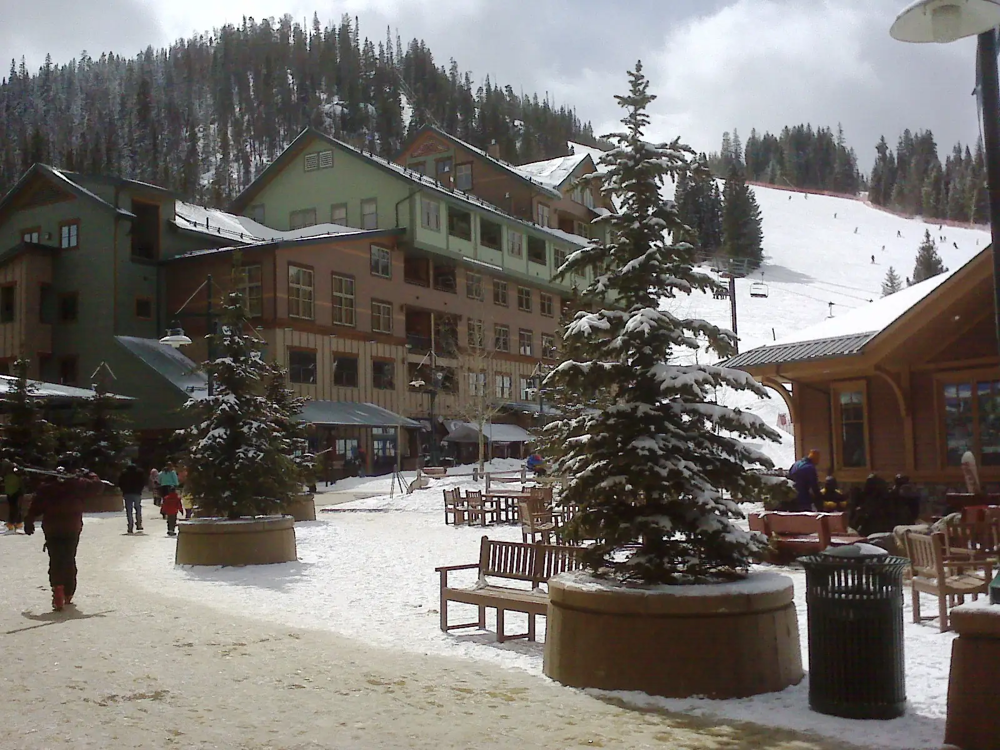

Winter Park, Colorado · Ski conditions
Winter Park Conditions and Webcams Today
Winter Park's webcams and kid facts: lessons from age 4, a free kids ticket with a group lesson, tubing, free parking. It is about 75 miles from Denver, with a ski train in season.
Researched with AI (Miles Rowan) · sources linked and dated · How we check
Is it open today?
For open lifts, check Winter Park's snow report.
What our webcam check shows
No cam read from us yet. Cam reads show here only when a recent one has passed a separate automated accuracy check.

Plan the day with kids
- Season and hours: Winter Park lists Nov 13, 2026 to Apr 18, 2027 (the end date marked with an asterisk). From Nov 13 to Dec 5 lifts run about 9am to 4pm daily, "subject to weather and conditions"; from Dec 5 to Apr 4 they open at 8am on Saturdays and Sundays.
- Lessons: Kids group lessons take kids 4 and up. Full day: meet 9am outside Sorensen Park by the Gemini Lift; lesson 9:15am to 3pm, lunch included. Lessons are instruction only: bring a ticket or pass and gear. Rental kids arrive an hour early for fitting.
- Kids Ski Free: A free kids lift ticket (ages 4 to 14) with a kids group lesson, multi-week lesson or kids 5-pack; no blackout dates listed. The lessons page says book by November 30.
- Book ahead: Winter Park calls booking lessons online 24 to 48 hours ahead "highly recommended and sometimes required". Day lift tickets save up to 40% booked 48 or more hours ahead.
- Tubing: The Coca-Cola Tubing Hill sits behind the Vintage Hotel, a Cabriolet ride from the Village. Riders must be 36 inches or taller, each with a ticket. Its page still showed last season's night dates when we read it; check hours live.
- Childcare: Group lessons start at age 4, and the pages we read don't mention childcare; ask Winter Park before you plan around a child under 4.
Ticket, parking and train prices on Winter Park's pages, read Nov 17:
- Adult 1-day lift ticket: from $113
- Adult Thursday ticket, Jan 7 to Feb 25, 2027: $89
- Village Parking Garage, full day: $55 Sat–Sun, $45 Mon–Fri ($25 from noon)
- Vintage Lot, full day: $40 weekends and holidays, $15 Mon–Fri
- Winter Park Express train from Denver: fares from $9
Ticket prices are adult only, as listed on Winter Park's lift ticket page; no child ticket price is posted. Parking rates are "subject to change"; the garage is free from 3pm. The train page doesn't say whether its lowest fare is one way or per child.
Lift tickets and lessons: Winter Park's pages post adult ticket prices only, with no child ticket or kids lesson prices, so we can't sum a family-of-4 day; check live. See Winter Park lift tickets.
From Winter Park getting here, Winter Park Kids Ski Free, Winter Park Express, Winter Park kids group lessons, Winter Park resort parking and Winter Park hours of operation, read Nov 17.
Getting there from Denver
- Car: I-70 west, then US 40. Winter Park lists 75 miles from the Denver metro and 90 from Denver International Airport, with no drive time; it links to CDOT for road conditions.
- Train: the Winter Park Express (run with Amtrak, per Winter Park's getting-here page) runs Thursdays to Sundays, Dec 10, 2026 to Apr 4, 2027. It leaves Denver Union Station about 7am and the resort about 4:35pm, a ride of about 2.5 hours, and stops steps from the base. Skis and boards ride free as carry-on.
- Parking: no reservations needed. Free lots: North Bench (walk to the base), G Lot (free shuttle), Old Town lots (shuttle on weekends and holidays only) and Mary Jane once it opens. All resort shuttles are free.
- Airport: Home James runs scheduled shuttles from Denver International Airport. Address: 85 Parsenn Road, Winter Park, CO.
If the snow is thin
- Winter Park runs lifts "subject to weather and conditions"; check its mountain report before you drive up.
- Tubing is the non-ski option on the pages we read (see its Winter Park tubing hill page); night tubing is "weather and conditions permitting".
- We didn't find a weather refund policy for tickets or lessons on the pages we read; ask before you book.
From Winter Park hours of operation and Winter Park tubing hill, read Nov 17.
Cam by cam
The 3 Winter Park cam views our reader uses, in our own descriptive words (see Winter Park's own cam page, as listed in our cam feed Nov 17): Snow stake, Lower slopes, Town view. Once our reads start, each cam's last read time shows here.
How we read the cams: a program looks at Winter Park's public webcam pictures and notes only what a picture can show: fresh snow, snow cover, snowmaking, moving lifts, how busy the base looks, visibility and the snow stake. Each read shows its time; after 90 minutes it is marked older, after 6 hours it is hidden. We never say whether terrain is safe, icy, groomed or open; Winter Park's own report decides that. We don't show the cam pictures or count people.
Sources: Winter Park mountain cams · Winter Park hours of operation · Winter Park kids group lessons · Winter Park resort parking · Winter Park getting here · Winter Park Kids Ski Free · Winter Park tubing hill · Winter Park Express (read Nov 17). We haven't skied Winter Park.